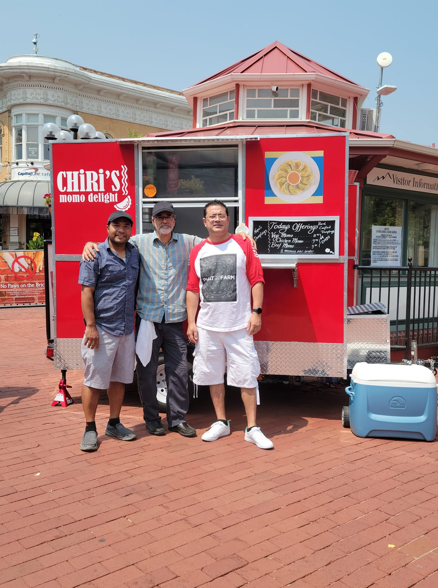

Chiri's love for food runs as deep as the Himalayan rivers

Chiri grew up in the Himalayan foothills of Nepal, surrounded by misty peaks and the warm smells of family kitchens. Fresh ginger, garlic, and wild herbs filled every market, teaching Chiri that cooking is about love and memory. Those early years instilled a deep respect for tradition and a hunger to share those flavors with the world.
The famous Nepali momo became Chiri's signature dish, each dumpling folded by hand and filled with spiced meat or vegetables, then steamed until tender. A tangy sauce adds the perfect finishing touch. This passion for perfecting every bite met a bold entrepreneurial spirit when Chiri decided to take the food truck to the streets. It was a risk, but one driven by the belief that authentic food can travel anywhere.
What truly matters to Chiri is the sight of people's faces lighting up with that first taste. The truck has become a tiny community hub where strangers become friends over shared baskets of momos. Laughter and conversation flow freely, and every returning customer feels like family. Chiri finds pure joy in these connections, knowing that food has the power to break down walls and build belonging.
Chiri also loves using local produce and experimenting with seasonal sides like a cool mint dip or a hearty lentil soup. The best part of each day is the unexpected greeting from a new guest or the familiar wave of a regular. This rolling kitchen is Chiri's tribute to the Himalayas, a celebration of culture, and a reminder that following your passion feeds not just the stomach but the soul. Every plate served is an invitation to taste the mountains and share in the happiness.